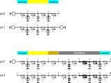
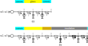
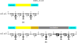

Disassembled thermal circuits from wall description#

This notebook presents how the description of the walls is transformed into a set of disassembled thermal networks implemented in the function wall2TC() of dm4bem module.
The description of the walls is given in a folder that contains two types of files:
wall types: thermo-physical properties of the materials;
walls data: regarding the area, temperature & flow-rate sources, coefficients for convection and radiation of the wall surfaces.
The thermal network is a data structure (dictionary) containing the matrices \(A, G, C\) and the vectors \(b, f, y\).
import pandas as pd
import dm4bem
The input data needed for the thermal model of the building is in a folder.
folder = "./pd/bldg_wall2TC"
Wall types#
Let’s consider two types of walls with physical properties given in the file wall_types.csv.
wall_types = pd.read_csv(folder + '/wall_types.csv')
wall_types
| type | Material | Conductivity | Specific heat | Density | Width | Mesh | |
|---|---|---|---|---|---|---|---|
| 0 | 0 | Concrete | 1.400 | 880 | 2300 | 0.200 | 1 |
| 1 | 0 | Insulation | 0.027 | 1210 | 55 | 0.080 | 2 |
| 2 | 1 | Glass | 1.400 | 750 | 2500 | 0.004 | 1 |
The file wall_types.csv contains:
the physical properties of the materials given in SI units: conductivity in W·m⁻¹·K⁻¹, specific heat in J·kg⁻¹·K⁻¹, density in kg·m⁻³;
the width of the layers in m;
the number of meshes in which each layer is numerically discretized; each mesh has two resistances and a capacity.
There are two types of walls in the file wall_types.csv (Figure 1):
The wall of type 0 has two layers: Concrete and Insulation. Concrete layer has one mesh (two resistances and a capacity) and Insulation layer has two meshes (i.e., four resistances and two capacities).
The wall of type 1 has one layer: Glass, discretized in one mesh.
Figure 1. The two types of wall described in the file
wall_types.csv
Walls data#
The models of the walls are based on the materials given in the file wall_types.cvs. For each specific wall, data related to surfaces is given (area, orientation, convection coefficients, radiative properties, temperature and flow-rate sources).
There are three kinds of walls (Table 1):
generic (e.g., file
walls_generic.csv),outdoor (e.g., file
walls_out.csv),indoor (e.g., file
walls_in.csv).
Table 1. Columns of
walls_generic.csv,walls_out.csv, andwalls_in.csvfiles. The columns that are present in the file are maked by ✓ for _generic, _out and _in walls. The columns needed to define the thermal circuit are marked by ✓ in TC.
Column |
Unit |
Definition |
Example |
_generic |
_out |
_in |
TC |
|---|---|---|---|---|---|---|---|
ID |
Identifiant of each wal |
w2 |
✓ |
✓ |
✓ |
✓ |
|
type |
Type of wall given in |
1 |
✓ |
✓ |
✓ |
✓ |
|
Area |
m² |
Surface area of the wall |
25 |
✓ |
✓ |
✓ |
✓ |
β |
° |
Tilt angle: 90° vertical; >90° upward facing |
90 |
✓ |
✓ |
||
γ |
° |
Azimuth: 0° South, 180° North, >0° westward |
90 |
✓ |
✓ |
||
albedo |
Fraction of sunlight that is diffusely reflected by ground surface |
0.25 |
✓ |
✓ |
|||
T0 |
°C |
Temperature source of outer surface |
To |
✓ |
✓ |
✓ |
|
T1 |
°C |
Temperature source of inner surface |
Ti |
✓ |
✓ |
||
Q0 |
W |
Flow rate source on outer surface |
Qo |
✓ |
✓ |
✓ |
✓ |
Q1 |
W |
Flow rate source on inner surface |
Qi |
✓ |
✓ |
✓ |
✓ |
h0 |
W·m⁻²·K⁻¹ |
Convection coefficient of outer surface |
25 |
✓ |
✓ |
✓ |
✓ |
h1 |
W·m⁻²·K⁻¹ |
Convection coefficient of inner surface |
8 |
✓ |
✓ |
✓ |
✓ |
α0 |
Short-wave absorbtion coefficient of outer surface |
0.25 |
✓ |
✓ |
✓ |
||
α1 |
Short-wave absorbtion coefficient of inner surface |
0.30 |
✓ |
✓ |
✓ |
||
ε0 |
Long-wave hemispherical emissivity of outer surface |
0.85 |
✓ |
✓ |
✓ |
||
ε1 |
Long-wave hemispherical emissivity of inner surface |
0.70 |
✓ |
✓ |
✓ |
||
y |
Output temperature nodes (by using slicing) |
[0, -1] |
✓ |
✓ |
✓ |
✓ |
Notes:
The generic walls may define out or in walls by not specifying temperature sources (see
wall_generic.csv,wall_out.csv, andwall_in.csvfiles for examples).The out walls do not need the temperature sources on the inner surfaces, T1.
The in walls do not need tilt (β) and azimuth (γ) angles, the albedo of the ground, and the temperature sources on the outer (T0) and the inner (T1) surfaces.
The column TC shows the information needed to obtain the thermal circuit. The data related to radiative exchange is used in the calculation of flow-rate sources in short-wave and for conductances in long-wave radiative exchange.
Generic wall#
Generic walls contain all the information listed in Table 1. For example, wall_generic.csv file describes the walls shown in Figure 2.
walls = pd.read_csv(folder + "/walls_generic.csv")
walls
| ID | type | Area | β | γ | albedo | T0 | T1 | Q0 | Q1 | h0 | h1 | α0 | α1 | ε0 | ε1 | y | |
|---|---|---|---|---|---|---|---|---|---|---|---|---|---|---|---|---|---|
| 0 | w0 | 1 | 1 | 90.0 | 0.0 | 0.25 | To | NaN | Qo | Qi | 20 | 10 | 0.25 | 0.3 | 0.85 | 0.7 | [0, -1] |
| 1 | w1 | 1 | 1 | 90.0 | 0.0 | 0.25 | To | Ti | Qo | Qi | 20 | 10 | 0.25 | 0.3 | 0.85 | 0.7 | 1 |
| 2 | w2 | 0 | 10 | 0.0 | 90.0 | 0.25 | To | NaN | Qo | Qi | 21 | 11 | 0.25 | 0.3 | 0.85 | 0.7 | [1, 2, -1] |
| 3 | w3 | 0 | 20 | NaN | NaN | 0.25 | NaN | NaN | Qo | Qi | 22 | 12 | 0.25 | 0.3 | 0.85 | 0.7 | [2, 1, 3] |
The file walls_generic.csv describes four walls (Figure 2):
according to the types of walls:
w0 and w1 are of type 1, i.e., concrete and insulation;
w2 and w3 are of type 0, i.e., glass.
according to the temperature sources:
w0 and w1 are outdoor walls that have as boundary condition the outdoor temperature T0; the temperature on the inner surface is a room temperature, which is an output of the model.
w1 is a wall that has temperature sources on both sides.
w3 is an inner wall that separates two rooms. It does not need information for solar direct radiation (tilt and azimuth angles and the albedo of the ground surface in front of the wall).
Outdoor walls, such as gw0 (generic wall w0) and gw2 (generic wall w2) in Figure 2, can be obtained from the generic walls by not considering a temperature source T1 on inner surface, which is indicated by NaN in rows w0 and w2 for column T1.
Likewise, indoor walls, such as gw3 (generic wall 3) in Figure 2, can be obtained from the generic walls by indicating that there are no temperature sources in T0 and T1, i.e. T0 = NaN and T1 = NaN.
The outputs y are indicated in a list using slicing. For example, the outputs of wall w0 are temperature nodes 0 and -1 (i.e., the last node which is node 3) in Figure 2.
The numbering convention of the elements of the circuits is:
the nodes (i.e., temperatures) are numbered from left to right and from up to down;
the oriented branches (i.e., flows) are numbered from the node with a lower index to the node with a higher index;
the reference temperature node is not numbered.

Figure 2. Four examples of generic walls described in the file
wall_generic.csv. Walls gw0 and gw1 are of type 1 (glass), described inwall_type.csv. Walls gw2 and gw3 are of type 0 (concrete and insulation), described inwall_type.csv.
The files describing the types (wall_types.csv) and the data (walls_generic.csv) of the walls contain the information needed to obtain the disassembled thermal circuits. The names of the walls can have a prefix.
# Thermal circuits from wall types and wall data
TCd_generic = dm4bem.wall2TC(wall_types, walls, prefix="g")
Each matrix (\(A, G, C\)) or vector (\(b, f, y\)) of the thermal circuit can be accessed as Pandas dataframes.
TCd_generic['gw0']['A']
| gw0_θ0 | gw0_θ1 | gw0_θ2 | gw0_θ3 | |
|---|---|---|---|---|
| gw0_q0 | 1.0 | 0.0 | 0.0 | 0.0 |
| gw0_q1 | -1.0 | 1.0 | 0.0 | 0.0 |
| gw0_q2 | 0.0 | -1.0 | 1.0 | 0.0 |
| gw0_q3 | 0.0 | 0.0 | -1.0 | 1.0 |
All matrices (\(A, G, C\)) and vectors (\(b, f, y\)) of each thermal circuit can be printed.
dm4bem.print_TC(TCd_generic['gw0'])
A:
gw0_θ0 gw0_θ1 gw0_θ2 gw0_θ3
gw0_q0 1.0 0.0 0.0 0.0
gw0_q1 -1.0 1.0 0.0 0.0
gw0_q2 0.0 -1.0 1.0 0.0
gw0_q3 0.0 0.0 -1.0 1.0
G:
gw0_q0 20.0
gw0_q1 700.0
gw0_q2 700.0
gw0_q3 10.0
dtype: float64
C:
gw0_θ0 0.0
gw0_θ1 7500.0
gw0_θ2 0.0
gw0_θ3 0.0
dtype: float64
b:
gw0_q0 To
gw0_q1 0.0
gw0_q2 0.0
gw0_q3 0.0
dtype: object
f:
gw0_θ0 Qo
gw0_θ1 0.0
gw0_θ2 Qi
gw0_θ3 0.0
dtype: object
y:
gw0_θ0 1.0
gw0_θ1 0.0
gw0_θ2 0.0
gw0_θ3 1.0
dtype: float64
All thermal circuits read from the file walls_generic.csv can be printed.
print('TCd_generic')
for key in TCd_generic.keys():
print('Wall:', key)
dm4bem.print_TC(TCd_generic[key])
TCd_generic
Wall: gw0
A:
gw0_θ0 gw0_θ1 gw0_θ2 gw0_θ3
gw0_q0 1.0 0.0 0.0 0.0
gw0_q1 -1.0 1.0 0.0 0.0
gw0_q2 0.0 -1.0 1.0 0.0
gw0_q3 0.0 0.0 -1.0 1.0
G:
gw0_q0 20.0
gw0_q1 700.0
gw0_q2 700.0
gw0_q3 10.0
dtype: float64
C:
gw0_θ0 0.0
gw0_θ1 7500.0
gw0_θ2 0.0
gw0_θ3 0.0
dtype: float64
b:
gw0_q0 To
gw0_q1 0.0
gw0_q2 0.0
gw0_q3 0.0
dtype: object
f:
gw0_θ0 Qo
gw0_θ1 0.0
gw0_θ2 Qi
gw0_θ3 0.0
dtype: object
y:
gw0_θ0 1.0
gw0_θ1 0.0
gw0_θ2 0.0
gw0_θ3 1.0
dtype: float64
Wall: gw1
A:
gw1_θ0 gw1_θ1 gw1_θ2
gw1_q0 1.0 0.0 0.0
gw1_q1 -1.0 1.0 0.0
gw1_q2 0.0 -1.0 1.0
gw1_q3 0.0 0.0 -1.0
G:
gw1_q0 20.0
gw1_q1 700.0
gw1_q2 700.0
gw1_q3 10.0
dtype: float64
C:
gw1_θ0 0.0
gw1_θ1 7500.0
gw1_θ2 0.0
dtype: float64
b:
gw1_q0 To
gw1_q1 0.0
gw1_q2 0.0
gw1_q3 -Ti
dtype: object
f:
gw1_θ0 Qo
gw1_θ1 0.0
gw1_θ2 Qi
dtype: object
y:
gw1_θ0 0.0
gw1_θ1 1.0
gw1_θ2 0.0
dtype: float64
Wall: gw2
A:
gw2_θ0 gw2_θ1 gw2_θ2 gw2_θ3 gw2_θ4 gw2_θ5 gw2_θ6 gw2_θ7
gw2_q0 1.0 0.0 0.0 0.0 0.0 0.0 0.0 0.0
gw2_q1 -1.0 1.0 0.0 0.0 0.0 0.0 0.0 0.0
gw2_q2 0.0 -1.0 1.0 0.0 0.0 0.0 0.0 0.0
gw2_q3 0.0 0.0 -1.0 1.0 0.0 0.0 0.0 0.0
gw2_q4 0.0 0.0 0.0 -1.0 1.0 0.0 0.0 0.0
gw2_q5 0.0 0.0 0.0 0.0 -1.0 1.0 0.0 0.0
gw2_q6 0.0 0.0 0.0 0.0 0.0 -1.0 1.0 0.0
gw2_q7 0.0 0.0 0.0 0.0 0.0 0.0 -1.0 1.0
G:
gw2_q0 210.0
gw2_q1 140.0
gw2_q2 140.0
gw2_q3 13.5
gw2_q4 13.5
gw2_q5 13.5
gw2_q6 13.5
gw2_q7 110.0
dtype: float64
C:
gw2_θ0 0.0
gw2_θ1 4048000.0
gw2_θ2 0.0
gw2_θ3 26620.0
gw2_θ4 0.0
gw2_θ5 26620.0
gw2_θ6 0.0
gw2_θ7 0.0
dtype: float64
b:
gw2_q0 To
gw2_q1 0.0
gw2_q2 0.0
gw2_q3 0.0
gw2_q4 0.0
gw2_q5 0.0
gw2_q6 0.0
gw2_q7 0.0
dtype: object
f:
gw2_θ0 Qo
gw2_θ1 0.0
gw2_θ2 0.0
gw2_θ3 0.0
gw2_θ4 0.0
gw2_θ5 0.0
gw2_θ6 Qi
gw2_θ7 0.0
dtype: object
y:
gw2_θ0 0.0
gw2_θ1 1.0
gw2_θ2 1.0
gw2_θ3 0.0
gw2_θ4 0.0
gw2_θ5 0.0
gw2_θ6 0.0
gw2_θ7 1.0
dtype: float64
Wall: gw3
A:
gw3_θ0 gw3_θ1 gw3_θ2 gw3_θ3 gw3_θ4 gw3_θ5 gw3_θ6 gw3_θ7 gw3_θ8
gw3_q0 -1.0 1.0 0.0 0.0 0.0 0.0 0.0 0.0 0.0
gw3_q1 0.0 -1.0 1.0 0.0 0.0 0.0 0.0 0.0 0.0
gw3_q2 0.0 0.0 -1.0 1.0 0.0 0.0 0.0 0.0 0.0
gw3_q3 0.0 0.0 0.0 -1.0 1.0 0.0 0.0 0.0 0.0
gw3_q4 0.0 0.0 0.0 0.0 -1.0 1.0 0.0 0.0 0.0
gw3_q5 0.0 0.0 0.0 0.0 0.0 -1.0 1.0 0.0 0.0
gw3_q6 0.0 0.0 0.0 0.0 0.0 0.0 -1.0 1.0 0.0
gw3_q7 0.0 0.0 0.0 0.0 0.0 0.0 0.0 -1.0 1.0
G:
gw3_q0 440.0
gw3_q1 280.0
gw3_q2 280.0
gw3_q3 27.0
gw3_q4 27.0
gw3_q5 27.0
gw3_q6 27.0
gw3_q7 240.0
dtype: float64
C:
gw3_θ0 0.0
gw3_θ1 0.0
gw3_θ2 8096000.0
gw3_θ3 0.0
gw3_θ4 53240.0
gw3_θ5 0.0
gw3_θ6 53240.0
gw3_θ7 0.0
gw3_θ8 0.0
dtype: float64
b:
gw3_q0 0.0
gw3_q1 0.0
gw3_q2 0.0
gw3_q3 0.0
gw3_q4 0.0
gw3_q5 0.0
gw3_q6 0.0
gw3_q7 0.0
dtype: float64
f:
gw3_θ0 0.0
gw3_θ1 Qo
gw3_θ2 0.0
gw3_θ3 0.0
gw3_θ4 0.0
gw3_θ5 0.0
gw3_θ6 0.0
gw3_θ7 Qi
gw3_θ8 0.0
dtype: object
y:
gw3_θ0 0.0
gw3_θ1 1.0
gw3_θ2 1.0
gw3_θ3 1.0
gw3_θ4 0.0
gw3_θ5 0.0
gw3_θ6 0.0
gw3_θ7 0.0
gw3_θ8 0.0
dtype: float64
Outdoor walls#
Outdoor walls do not have temperature sources on indoor surfaces (Figure 3). They can be obtained from generic walls by not indicating the temperature source T1 (on the indoor surface), or they can be described by specific files, such as walls_in.csv.
Figure 3a shows walls w0 and w1 of type 1 (described in wall_types.csv) with only one layer which has one mesh.
Figure 3b shows walls w2 and w3 of type 0 (described in wall_types.csv) with two layers (concrete and insulation).

Figure 3. Outdoor walls: a) of type 1 b) of type 0. The type is indicated in the file
wall_types.csv.
walls = pd.read_csv(folder + '/walls_out.csv')
walls
| ID | type | Area | β | γ | albedo | T0 | Q0 | Q1 | h0 | h1 | α0 | α1 | ε0 | ε1 | y | |
|---|---|---|---|---|---|---|---|---|---|---|---|---|---|---|---|---|
| 0 | w0 | 1 | 1 | 90 | 0 | 0.25 | To | Qo | Qi | 20 | 10 | 0.25 | 0.3 | 0.85 | 0.7 | [0, -1] |
| 1 | w1 | 1 | 1 | 90 | 0 | 0.25 | To | Qo | Qi | 20 | 10 | 0.25 | 0.3 | 0.85 | 0.7 | 1 |
| 2 | w2 | 0 | 10 | 0 | 90 | 0.25 | To | Qo | Qi | 21 | 11 | 0.25 | 0.3 | 0.85 | 0.7 | [1, 2, -1] |
| 3 | w3 | 0 | 20 | 0 | 90 | 0.25 | Tsoil | Qo | Qi | 22 | 12 | 0.25 | 0.3 | 0.85 | 0.7 | [2, 1, 3] |
# Thermal circuits from data & type files of walls
TCd_out = dm4bem.wall2TC(wall_types, walls, prefix="o")
# Uncomment below to print all thermal circuits
# print('TCd_out')
# for key in TCd_out.keys():
# print('Wall:', key)
# pd_dm4bem.print_TC(TCd_out[key])
Indoor walls#
Indoor walls do not have temperature sources on surfaces (Figure 4). They can be obtained from generic walls by not indicating temperature sources T0 and T1, or they can be described by specific files, such as walls_in.csv.
Figure 4a shows walls w0 and w1 of type 1 (described in wall_types.csv) with only one layer which has one mesh.
Figure 4b shows wall w2 and w3 of type 0 (described in wall_types.csv) with two layers (concrete and insulation); the insulation layer is discretized in two meshes.

Figure 4. Indoor walls: a) of type 1 b) of type 0. The type is indicated in the file
wall_types.csv.
walls = pd.read_csv(folder + '/walls_in.csv')
walls
| ID | type | Area | Q0 | Q1 | h0 | h1 | α0 | α1 | ε0 | ε1 | y | |
|---|---|---|---|---|---|---|---|---|---|---|---|---|
| 0 | w0 | 1 | 1 | Qo | Qi | 20 | 10 | 0.25 | 0.3 | 0.85 | 0.7 | [0, -1] |
| 1 | w1 | 1 | 1 | Qo | Qi | 20 | 10 | 0.25 | 0.3 | 0.85 | 0.7 | 1 |
| 2 | w2 | 0 | 10 | Qo | Qi | 21 | 11 | 0.25 | 0.3 | 0.85 | 0.7 | [1, 2, -1] |
| 3 | w3 | 0 | 20 | Qo | Qi | 22 | 12 | 0.25 | 0.3 | 0.85 | 0.7 | [2, 1, 3] |
# Thermal circuits from data & type files of walls
TCd_in = dm4bem.wall2TC(wall_types, walls, prefix="i")
# Uncomment below to print all thermal circuits
# print('TCd_in')
# for key in TCd_in.keys():
# print('Wall:', key)
# pd_dm4bem.print_TC(TCd_in[key])